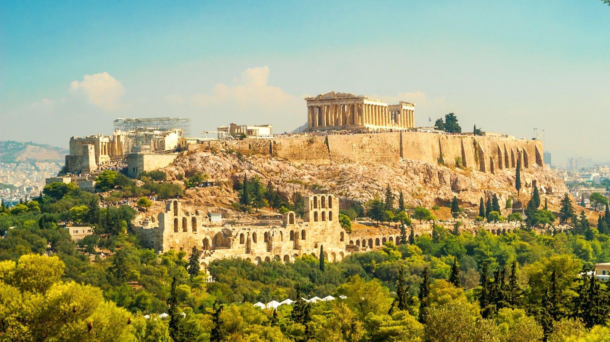

Tijdens de Archaïsche periode kwamen de Griekse stadstaten, ook wel poleis (enelvoud: polis) genoemd, op. Deze poleis verschilden redelijk van elkaar, zo hadden ze bijvoorbeeld een andere regeringsvorm. In de Myceense tijd was de leider van een "polis" meestal een koning, en in de donkere eeuwen heersden boerengemeenschappen over de "stadstaat", maar nu veranderde dat weer. Door de toenemende bevolking nam het gevoel van eenheid toe, waardoor de stadstaten ontstonden. Sommigen hiervan, zoals Athene of Sparta werden heel belangrijk.
 Een polis had in het midden van de stad een akropolis, een soort burcht met de belangrijkste tempel, die hoger ligt dan de rest van de stad. Hier konden de burgers zich veil houden als er gevaar was. het plein aan de voet van de akropolis diende als marktplaats en centrum voor handel, politiek, etc. Dit plein heet de agora.
In de meeste poleis was er een oligargische staatsvorm, dit houdt in dat er een kleine groep is de heerst. De meeste mensen die in dit bewind zaten waren natuurlijk ook rijk, ze kwamen dan ook in het bestuur omdat ze veel grond bezaten en veel militaire macht hadden.
De Atheense stadstaat